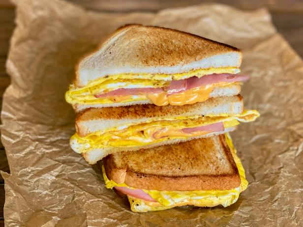

Breakfast Sandwich

Description
There is nothing better than waking up in the morning and sinking your teeth into one of these bad boys. Fast and easy to make, you'll be in heaven in no time!
Ingredients
- 2 Slices of Bread
- 1 Slice of Cheese Cheese
- 1 Egg
- 1 Slice of Ham
- Salt and Pepper to Taste
- 1 Tablespoon Butter
Directions
- Scrabble the egg. Use salt and pepper to taste. Fry the egg mixture and keep it in one piece. Once cooked through, fold into square the size of your bread.
- Remove the egg from the pan. Butter one side of each slice of bread. Place one slice butter side down in pan.
- Place cheese, ham, and egg on slice of bread and top with other slice, butter side out.
- Cook until bottom bread is toasty and cheese has melted. Flip sandwich.
- Cook until other slice of bread is toated. Remove from pan and enjoy
Home